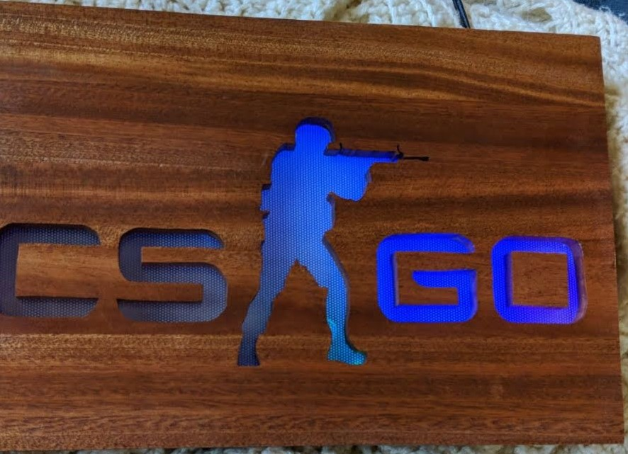

Part way through highschool my older brother disassembled an old monitor and found that
there is a light diffusing panel within them. With one of those panels I came up with the idea to make signs with
wood and use the panel to diffuse LED light throughout the sign. We had some glued up mahogany boards that are about
an inch thick which is the perfect depth to be able to cut a cavity for the light defuse an electronics and then stand
on its end.
Backlit Sign Projects

The first project I worked on was a CSGO sign for my friend who played the video game a fair
amount. I made my senior year of high school prior to when I had any electronics experience so my older brother wired it
up. It had two modes one of all blue as shown in the picture and one where it had a rainbow blend throughout it.
My second backlit sign was a gift for my younger brother, an avid Kansas City Chiefs fan.
It is backlit with a LED light strip with a infrared remote control and receiver allowing for full RBG control. A project
I want to return to to add a IOT microcontroller and a individually addressable lightstrip so it can change depeding on if
they are playing a game and win or other information gleamed from the internet.
My next backlit sign project involved more on the coding side of things
The project was a Christmas present for my dad and was a backlit sign of company logo for the company he
works for. Its lighting is made up to two LED light strips that are controlled independently.
The system also has a real time clock so it know what the time is and turns on in the morning and off to remind him to come
home. Additionally, on different holidays such as birthdays, anniversaries, and other holidays
it does different colors aside from the basic yellow coloring. It controls the two light strips
separately to allow for color blending between the two to do achieve coloring for things like Iowa State Colors.
The most complicated backlit sign I worked on is the chicken logo.
The chicken logo is a personal logo I made for myself off of my gamer tag of King Chicken.
The name originates from a running family joke with a Webkinz chicken. The backlit sign is
equipped with individually addressable LED lightstrips and a bluetooth microcontroller for a
custom app for color configuration.